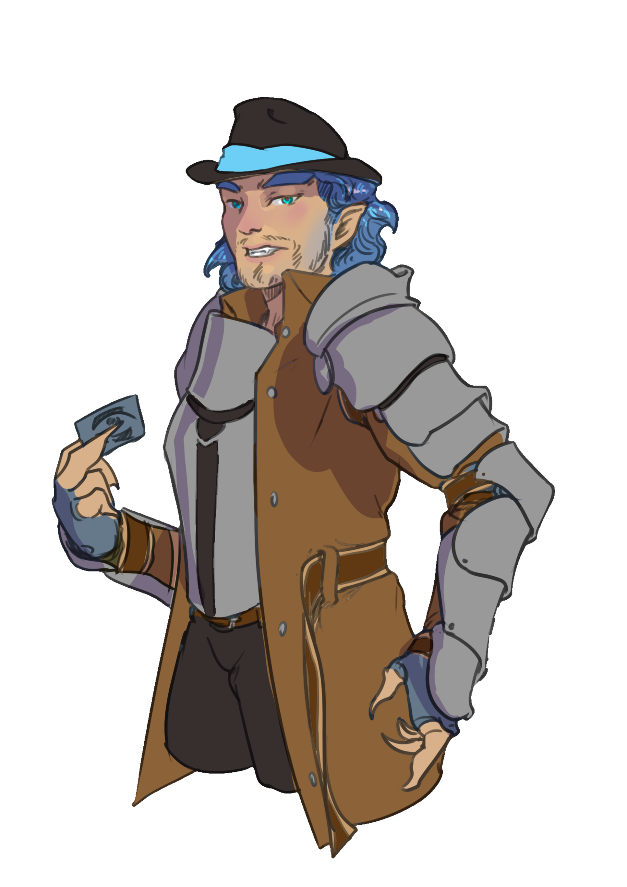

Introduction
Welcome to Check20, a tabletop RPG set in the roaring 1920s, blending high fantasy with the era's charm. Our game focuses on worldbuilding, fast-paced combat, and deep in-world relationships. It values player creativity and group consensus over rigid rules. Survival is key, as characters face real dangers, and not all battles are meant to be fought. Downtime is crucial, especially for roles like merchants needing time for their ventures. The game balances combat with social interactions, where NPCs offer rich stories and potential quests. It's a world where discovery, personal connections, and the thrill of combat coexist, against a backdrop of industrialization and magical mysteries. Players are storytellers, shaping the narrative with their actions in a world full of opportunities and challenges. Engage with the world, from running a jazz club to exploring treacherous lands, and let your imagination guide your journey.
Narrator
Your role is to create the game world, challenge players, and bring the story to life. Encourage player interaction and questions, and reward their achievements with points for character development. Flexibility and adaptation to player actions are key for a dynamic and enjoyable game. Foster creativity and collaboration for a shared adventure.
Players are Characters
Bring your character to life and collaborate with the group towards shared goals. Understand your character's abilities and be proactive in story progression. Think creatively and communicate effectively with the group for a rich, immersive experience.
How To Play
Gather a group of friends or like-minded folks who enjoy building stories together. I have created (and will keep creating) tools to make running this game easier. You can play online using Roll20, or go full classic with pencils and paper. Character creation is available on the website, but making your own sheets by hand is always an option.
A game system exists to give structure, rules that create challenges and focus. Yes, everything is made up anyway, but having a framework makes the fun funner. Pure improv can be great, but having mechanics gives you tension, consequences, and those big triumphant moments that feel earned.
Once you have gathered your people, they will make characters while you prepare the world. Listen to what they choose and shape the story around them. If someone is a tank, think of intense fights and a big boss battle. If someone is a mage, maybe there is a rival spellcaster, a wise mentor, or a magic school down the street. If someone is a merchant, break out some spreadsheets and prepare for the weirdest and most unpredictable corner of this system, a corner even I am still figuring out.
Players choose a Class, then a Path and Talent for that Class. Before or after that they pick a Species. Your world determines whether species are high fantasy or low fantasy. In high fantasy, everyone might be wildly unique creatures. In low fantasy, everyone is basically human with one cool feature, like an orc who is just a dude with modest tusks, or a helborn who looks normal except their irises burn like embers.
Low fantasy makes high fantasy moments feel even bigger. But I almost always run high fantasy because it is fun to let players be happy. And after a dozen campaigns, who wants to be just a knight when you can be a plaguebringer half angel with a penchant for mysteries.
Now the Narrator sets the scene. How do these characters fit in? Are they a band of oddballs sitting in a smoky bar, low lights and even lower inhibitions? Are they a mystery solving crew sharing an apartment downtown? In Shek, the world is dangerous and alive with possibility. Even a simple trip to Target (which existed in the 1920s, trust me on this) can turn into a battle with a sewer construct, yes a creature built from the sewer itself. The drain mouth rises up, pipes twisting like a serpent, and you grin as you ask,
Roll Outcomes
| Roll | Outcome | Provoke |
|---|---|---|
| 1-4 | Fail + | Yes @ Advantage |
| 5-9 | Fail | Yes |
| 10-14 | Minor Failure | Yes @ Disadvantage |
| 15-19 | Success | - |
| 20-24 | Success + | - |
| 25-29 | Success ++ | - |
| 30-34 | Success +++ | - |
Advantage and Disadvantage
- Advantage: Roll a d20+4 then roll a d20, take the higher result
- Disadvantage: Roll a d20-4 then roll a d20, take the lower result
- Locked Out: If you have double disadvantage on a roll, you are unable to perform the action.
Opposed Checks
A niche roll is the opposed check, where two characters make rolls, adding their designated check against another creature or player making the same roll and adding their values as well. The winner of the check is the creature with the higher roll value.
Success + and Larger Outcomes
When a player rolls a Success + or higher, the result should feel bigger than a simple pass. Most checks have more than one way to succeed, so higher success tiers create stronger outcomes, better advantages, or more cinematic impact. Your job as the Narrator is to reward great rolls with great moments.
Example: Breaking Down a Door
A Success means the door breaks open. A Success + might have the door fly off its hinges. A Success ++ could send
the door crashing into a guard on the other side for 1d6 impact damage. A Success +++ might reveal crucial intel
or catch enemies completely unaware. Bigger success should equal bigger results.
Group Checks
When the whole party attempts the same action, such as sneaking past a patrol or pushing a truck out of the road,
you can call for a Group Check. The group must reach a number of total successes equal to the number of players
taking part. For example, a group of four characters needs four total successes to slip by undetected. Even if two
players fail, the stealth expert might roll a Success +++ while another hits a clean success, bringing the group
across the finish line together.
Setting Difficulty
The number of required successes changes how hard a task is. Something ordinary should not require a roll at all.
If a character can reasonably do the task, simply call it a success. For typical challenges a single success at
15 is all they need. Larger obstacles may require Success + or even multiple successes to show that the task is
significant. This lets you scale difficulty without changing the core target number.
Success + outcomes create memorable scenes and empower players to shape the story. Failure and success both move the narrative forward, but greater successes let the players shine.
Critical Checks and Failures
Critical checks are the extremes of a d20 roll. A critical success can supercharge an action, while a critical failure adds complications. This applies to all checks, not just attacks.
Critical Success: On a critical success, the effect of the action should be stronger or cleaner than normal. In combat this can mean double damage, an extra roll on a damage table, a bonus effect, or even finishing off a creature that is already near defeat and the situation makes sense. Outside combat it might mean perfect timing, extra information, or a stronger narrative outcome.
Critical Failure: On a critical failure, something goes wrong. In combat this might mean half damage, a weapon slipping, breaking, or creating a new problem on the battlefield. A spell might backfire, fizzle, or cause unintended side effects. A critical failure should never feel like a clean success, but creatures with very high Checks should rarely fall completely flat. For them, treat critical failures more as setbacks and complications than total collapse.
Gameplay
In this game, dice are used to see what happens when you try something risky, with the d20 doing most of the heavy lifting. In most situations, a roll of 15 or higher is considered a success.
When you roll, you add a relevant stat called a Check to your result. That total lands on a tier that ranges from Failure up to Success +++, with higher successes unlocking stronger effects, extra damage, or bonus advantages.
Actions come in different durations, from quick reactions to tasks that can take the whole day. Even when you fail, it is not the end of the story. Failure creates complications, twists, and new problems to solve, instead of simply stopping the game.
Types of Scenes
There are several types of interactions that players may engage in during the game. These include relationships, mysteries, problems, exploring, combat, and downtime.
- Relationships involve players interacting with characters from their own backstory or with new characters introduced by the narrator. These interactions can lead to intense role-playing and can bring new connections to the group. Creatures and NPCs may have basic or complex needs that players can exploit to gain something in return.
- Mysteries and problems are presented by the narrator for the players to solve or interact with. These can range from missing children, bounties, or haunted houses that need to be dealt with. Exploring the world created by the narrator allows players to discover new areas and locations, and can lead to building relationships with local businesses or guilds.
- Combat in this system is brutal, and players should be prepared for tough engagements. It is important to consider conditions and locking out creatures and NPCs from being able to act, rather than relying on hit points. Downtime involves characters recovering from battle and taking care of their equipment, which can lead to further interactions and connections within the city. Finally, character death is something to be expected in combat, but it does not necessarily mean the end of play. The group may consider seeking revival through a temple priest or hospital doctor.
- Character Death is a potential outcome of combat, and players should be prepared for it. However, death is not necessarily the end of play. The group may consider seeking revival through a temple priest or hospital doctor, or may choose to continue the game with a new character. It is important to remember that character death should be taken seriously and not approached with a mindset of always winning
- Downtime is an important aspect of the game, as it allows characters to recover from battle and tend to their equipment. Repairing armor and interacting with blacksmiths to afford it can lead to further connections within the city and can involve other types of interactions, such as favors or quests. It is important to not take downtime lightly and to consider it as a part of the overall story.
Provoke
A creature provokes when it leaves itself open to retaliation. This happens if an attack misses, or when a creature willingly moves out of another’s melee range. The target is granted a counterattack, the result of which depends on the original roll’s outcome. Advantage and Disadvantage rolls still apply, with double advantages or disadvantages becoming automatic success or failure. Critical results create memorable moments with significant effects as noted on character sheets.
Provokes can also occur in ranged combat if the creature being targeted has a ranged option immediately available. A creature will likewise provoke if it moves out of another creature’s melee range without first using the Disengage half-action.
Damage and Non-D20 Rolls
Damage calculation usually starts with armor, then wounds inward unless otherwise specified. Non-d20 rolls are used for damage, spells, conditions, and random events, with the narrator providing dice for these specific situations.
Progression
At every Path Progression Step gain one of the following: +1 to any check (max 15), +1 Spell Point, or +1 Class Resource.
Checks
In the game, checks dictate how your character interacts with the world and faces challenges. At the start, you're given 20 points to spread among these checks, but no check can receive more than 10 points from this initial pool.
The Math: When you roll a 20-sided die (d20), each outcome has a 5% probability. The average roll is 10.5, meaning there's a 50% likelihood of rolling 10 or above. Adding modifiers, like a +5 bonus, shifts the average roll to 15.5, enhancing your chances of superior results. As you move up the scale (15-34), outcomes improve, leading to better achievements in combat or surpassing original goals.
Minimum Wounds
Your wounds are equal to your Agility + Strength checks. If you put points into Agility or Strength, it increases your wounds by that much. If you do not have any points in either, you have a minimum of 1. If you put 1 into one of the checks, it would still be 1 until you raise it above the minimum.
Low Light Vision
In dark places where all you have is a torch or a flashlight, you use the low light vision stat.
Unless
otherwise stated, creatures cannot see in complete darkness.
Every 2 points: Increases the low-light distance by 5ft.
Training to Improve Abilities
Characters can train to boost their abilities. While the Merchant is off doing business deals, the Tank is in the gym training or perhaps in the library rounding out their skills.
Training Duration
- Can only train one at a time.
- Months needed = desired ability value.
Example: To go from Strength 3 to 4, train for 4 months. To go from 1 to 4 would be 9 months:
- 1-2: 2 months
- 2-3: 3 months
- 3-4: 4 months
Training Commitment
Emphasize to players the significance of full devotion in their training regimen. It's an opportunity for rich role-play, exploring the struggles and triumphs that define their character's growth. While occasional minor tasks are part of their routine, their narrative should be dominated by intense and purposeful training, shaping their journey towards greatness.
Checks Table
| Check | Description |
|---|---|
| Agility |
Perform tasks with precision and physical agility. Increases movement speed and
initiative
bonus. Movement Base: 30ft Every 2 points: Increase by 5ft Each point: Increases wounds |
| Crafting |
Transform raw materials into utility and art, including repairing or tinkering with
items.
Basic crafting: Small-scale improvisations. Advanced crafting: Requires time, materials, and multiple checks. |
| Influence |
Measures your knack for weaving together persuasive dialogue, emotional
intelligence, and
performative elements to captivate and convince. Includes: Understanding audiences, engaging them, and swaying perspectives. |
| Intellect |
Primarily used for comprehending magic or conducting research. Fields: Nature, arcanum, history, occult, science, etc. |
| Luck | Influences the probability of experiencing good fortune or favorable outcomes. |
| Spirit |
Mystical link to the unseen, bridging the supernatural. Every 2 points: Grants 1 spell point. 1 spell point: Grants access to wordless magic. |
| Stealth | The ability to move quietly and unnoticed, including hiding, blending into crowds, or moving silently. |
| Strength |
Represents raw power and resilience. Each point: Increases wounds. |
| Observation |
Closely observe surroundings and interpret non-verbal cues. Useful for: Investigation and understanding others' intentions. Low Light Base: 30ft Every 2 points: Increases by 5ft. |
| Survival |
Primal instinct and the ability to navigate dangers and endure harsh
environments. Used for: Navigation and survival skills. |
Loyalty
Loyalty not only measures individual trust and bonds but also reflects a character's reputation within factions or guilds, impacted by their actions and decisions. Positive deeds like completing quests or offering gifts enhance loyalty, while negative actions such as betrayal diminish it. This system includes:
- Individual Loyalty: Loyalty between characters.
- Group Reputation: A character's standing with factions or guilds changes based on their actions, affecting interactions and opportunities within those groups.
Loyalty points are earned or lost through these actions, dictating the character's relationship and standing within the community. Tiers range from Hostile to Unwavering to represent the depth of trust or disdain. Loyalty Checks, influenced by these points or the character's tier within the faction or guild, are pivotal in social encounters, leading to outcomes such as gaining access to unique resources, facing hostility, or unlocking special quests.
Loyalty Tiers
| Tier | Description |
|---|---|
| Tier 0 (Negative): Hostile | Most likely to attack on sight but might be willing to listen to reason. |
| Tier 1 (0-3 points): Neutral | No particular benefits or penalties. |
| Tier 2 (4-6 points): Friendly | Minor favors, access to some restricted areas or information. |
| Tier 3 (7-9 points): Trusted | Moderate favors, access to more resources or assistance. |
| Tier 4 (10-20 points): Devoted | Significant favors, access to high-value resources or powerful allies. |
| Tier 5 (21-30 points): Unwavering | Complete trust, unwavering support, and access to top-tier resources or allies. |
Combat
Character Health
Character health in this RPG pivots from traditional hit points to a system of armor and wounds for a grittier feel. Damage hits armor first, then wounds. Zero wounds result in being in the Injured Condition and further damage risks the Death condition.
- Armor acts as your first defense, absorbing damage until depleted, then requires repairs. Some spells boost armor temporarily.
- Wounds track minor injuries, healed by rest or medical aid. Exhausting wound capacity leads to the Injured condition; additional harm may cause death. Wound capacity is the sum of Agility and Strength checks.
- Healing replenishes wounds up to the character's maximum, not affecting armor or directly curing conditions.
Combat and Non-Combat Mechanics
- Finisher: A Finisher allows you to eliminate a helpless foe in one strike. Sleeping guards, bound prisoners, or creatures completely unaware of you can be ended instantly without playing through full combat. Stealth can help you set up a Finisher, but it is not required. This cannot be used on an active or aware opponent.
- Targeting: To attack, you must see, hear, or otherwise detect your target. Lack of senses may impose disadvantages.
- Cover: Targets behind half cover are at disadvantage to hit; targets behind full cover cannot be targeted.
- Stealth: Stealth lets you hide from enemies. Take an action to make a Stealth check. If successful, you are unseen and your next attack has Advantage, with additional consecutive attacks at Advantage for each success. Attacking, spellcasting, or revealing yourself in any other way ends Stealth unless a feature says otherwise.
- Surprise Turns: When attacking from stealth, you gain one extra action. This reveals your position unless an ability states otherwise.
- Called Shots: Aim for specific effects rather than damage. Declare before attacking, accept a -10 to hit, and if successful, inflict conditions like Bleeding, Broken, or Blind, instead of normal damage.
What You Can Do on Your Turn in Combat
- Move: Utilize your speed and terrain to reposition, dodge, or engage. Movement can be split before and after your action as needed.
- Action: The primary activity you perform, like attacking or casting a spell. Generally, you get one action per turn, though certain abilities may offer more.
- Half-Actions: Smaller actions that can be doubled up in place of a full action, such as shooting and reloading a weapon.
- Off-Action: Can be used to attack on your turn or react off your turn to a missed attack.
- Free-Action: Minor tasks or communication that don't consume your action economy, like quick exchanges or item handling.
Press On
After a combat encounter, characters can "Press On" to regain 1 class resource, 1
spell point,
repair armor for
[[1d6]] + Crafting, heal for [[1d6]] + Survival, and
remove all
conditions and effects lasting
for 1 minute or
less. This option can be used twice per day, but not consecutively without engaging
in another
combat.
Long Rest
A long rest requires 10 hours of uninterrupted downtime, fully restoring all wounds, recharging class resources, repairing all armor to at least half, and removing any conditions that last one day or less. Characters can only take a long rest once per long rest and must be in a safe environment.
Combat simplifies to a clash between your party and enemies, initiating with an attack and proceeding in turn-based rounds, where strategy aims to incapacitate opponents akin to chess's checkmate, either through strategic disadvantage or elimination. Consideration for peaceful resolutions or stealth approaches can enrich the roleplaying experience.
Morale checks for enemies can dictate their willingness to fight, with living beings more likely to flee than undead. Turn order is determined by an initiative roll, which is a roll + Agility check, proceeding until one side wins or retreats. Actions can be delayed for strategic timing within one's turn, maintaining the chosen initiative position.
Theater of the mind combat descriptions can focus on relative distances: melee, reach, short, medium, long - rather than specifics, allowing for imaginative engagement with the scenario.
Range
| Range Type | Distance |
|---|---|
| Melee Range | 5ft or touching |
| Reach Range | 10ft |
| Short Range | Within 50ft |
| Medium Range | 50-200ft |
| Long Range | 200-1000ft |
| Visible Range | Within Visible Range |
Movement
In combat, movement is a separate type of action from attacking or using items. During any turn in combat, you can move any amount of your movement speed at any point during your turn. For example, if you have 30 ft of movement, you can move 10 ft to approach a creature, attack, and then move 20 ft away. However, if you engage a creature in combat and then retreat, they may have an opportunity to attack you using their Off-Action.
Fern-Tuft (ft) Definition: In this rulebook, "ft" does not stand for "feet" but for "fern-tuft," a unit of measure slightly smaller than the traditional foot. This ensures that when a character moves 50ft in a turn, the distance is more practical within the game's context. For ease, simply use "ferns" to refer to this unit of measurement in gameplay.
Types of Movement
- Difficult Terrain: Requires twice as much movement to navigate, so every 5 ft becomes 10ft.
- Jumping: Jump 5 ft from a standstill plus your Strength, or twice that distance with a running start.
- Climbing: Make a Strength check to move up to half your movement speed in one turn. Failures result in falling; make an Agility check to save yourself.
- Swimming: Swim at half your movement speed. Wearing heavy armor causes sinking.
- Prone: Being prone gives melee attackers advantage and ranged attackers disadvantage. Standing up costs 15 ft of movement.
- Moving Past Creatures: Move through a creature's space only if they are two sizes smaller (Tiny) or larger (Massive), or if they are allies who assist you.
- Falling: Take 5 bludgeoning damage per 10 ft of falling distance. Falls that bring you to the Injured Condition cause the Death Condition instead.
- Extreme Conditions: Hazardous environments, like lava or acid, cause 10 damage per round.
- Burrowing: Creatures that burrow are immune to sight-based spells and non-piercing weapons. They need a way to breathe while burrowed.
- Teleport: Special creatures can teleport to another unoccupied space without provoking
Types of Actions
Actions
Actions are activities that take only a few seconds to complete. They are distinct from Half-Actions and Off-Actions, which have different characteristics and limitations.
- Attack: Make a melee or ranged attack against a creature or object within range.
- Unarmed Strike: Deals 1 BPorS damage and can be taken as an Off-Action.
- Dash: Use your action to move again after moving, doubling your distance.
- Grab or Hold: Make an opposed Strength check to impose the Pinned Condition.
- Administer a Potion: Use an action to give a potion to a downed ally. Drinking a potion yourself is a Half-Action.
- Stealth: Make a Stealth check. If successful, you are unseen and your next attack has Advantage, with additional consecutive attacks at Advantage for each success. Attacking, spellcasting, or revealing yourself in any other way ends Stealth unless a feature says otherwise.
- Cast a Spell: Requires sound, movement, and a spellcasting check (usually Spirit).
Half-Actions
Half-Actions consume half of your action economy and allow two actions in one turn.
- Stances: Choose a stance to remain in until your next turn.
- Advantage Stance: Gain advantage on your next attack.
- Disadvantage Stance: Give disadvantage to enemies attacking you or allies in range.
- Offensive Stance: Use your Off-Action to Provoke.
- Reaction Stance: React to failed attacks against you.
- Disarm: Make an opposed Strength or Agility check to disarm a creature.
- Help: Give a creature +1 to a check.
- Pick up an Item: Picking up an item is a Half-Action.
- Use an Object: Interact with objects like levers or buttons.
- Disengage: Move out of a creature's range without provoking opportunity attacks.
Off-Actions
Off-Actions don't require an Action or Half-Action and include quick reactions or minor activities. They also dont need to be preformed on your turn.
- Reaction: A special action taken out of turn, like an opportunity attack.
- Provoke: Either attack creatures leaving your melee range without disengaging, when they fail a check against you, or do some other action that specifically provides Provoke.
- Drink Something: Use an Off-Action to drink or hand off a potion.
- Disrupt: Impose disadvantage on an enemy's attack with a successful check.
- Block: Reduce melee damage by half using a shield.
- Demoralize: Force enemies to make a morale check with an Influence (Intimidate) roll.
Non-Actions
Non-Actions don't consume any part of your action economy but may be limited by the narrator.
- Switch Weapons: Drop a weapon and draw another.
- Stress Push: Take 4 stress damage to gain a +3 bonus on a low roll.
- Roleplay: Briefly communicate or give orders without consequence.
Additional Character Information
Physical Attributes
Size
Size in the world of adventuring isn't merely a matter of height and weight; it's a key factor in determining how a creature interacts with its environment and other beings. From the tiniest insect skittering unseen beneath a leaf to the towering giants striding across mountain ranges, size affects reach, stealth, strength, and vulnerability. A creature's size can determine the spaces it can traverse, the opponents it can challenge, and the impact of its presence in any given situation. In a realm of magic and might, understanding size is crucial for survival and success.
- Tiny: Less than 1 ft – Insects, pixies, pocket watches, potion bottles, radio, rings, wind-up familiars, frogs, canary birds, magical acorns.
- Small: 1–4 ft – Gnomes, Klienkin, wild cats, gas lanterns, typewriters, violin cases, bootleg barrels, goblins, garden statues.
- Medium: 5–7 ft – Humans, Beastfolk, trench-coated detectives, phonograph cabinets, armor stands, coffins, altar tables, claw-foot bathtubs, cabaret stage props.
- Large: 8–15 ft – Ogres, dire bears, streetlamps, arcane engines, cars and trucks, reinforced vault doors, golem enforcers, dockside cranes, patrol boats, siege barricades.
- Giant: 15–25 ft – Clockwork titans, building-sized automatons, firewatch towers, billboard rigs, massive organ pipes, elevated rail segments, airship mooring frames.
- Monolithic: 25–100 ft – Skyscraper façades, cathedral domes, war zeppelins, tower golems, arcano-generators, coastal artillery, subterranean elevators, great bells, dirigible hangars.
- Environmental: Over 100 ft – Floating citadels, crashed skyliners, mountain elementals, world-tree, sleeping colossi, arcane power grids, misty fogbanks, buried industrial deities.
Gender
In the realm of Shek, gender is as varied as the landscapes that stretch from soaring peaks to deep mystical forests. Here, identity is not just male or female but also includes the enigmatic dragon. Dragons, with their ancient magic, can fluidly shift to align with the souls of those they cherish. The changelings too, with their transformative abilities, are not bound by any single form. In Shek, it's a gentle reminder for all: never assume, for identity is a personal journey, unique as the being who walks its path.

Bulk Items
Bulk represents the weight and space your gear occupies, from negligible trinkets to burdensome hauls. It's not just about weight but also the size and how cumbersome an item is. Managing your bulk is crucial for maintaining agility and avoiding encumbrance.
For example, a watch has 0 Bulk because it can be worn and forgotten about. Meanwhile, an empty barrel may be light but is awkward to carry, giving it a Bulk of 5.
Bulk Classifications
| Bulk | Description | Examples |
|---|---|---|
| 0 | Small/wearable items | Watch, ring, eyeglasses |
| 1 | Backpack-sized items | Clothes, flask, small tools |
| 5 | Large items | Armor, barrel, large pot |
| 10 | Heavy items | Furniture, small canoe |
| 15 | Very heavy items | Piano, cart |
| 20 | Extremely heavy items | Small car, heavy safe |
Bulk Penalties
- Bulk exceeds Strength: Over-encumbered (Pinned condition).
- Bulk > 2x Strength: Over-encumbered + Exhausted condition.
- Worn items: Worn items have no bulk.
- Bundles: Bundles reduce the average bulk of items.
- Backpacks: Reduce total bulk carried.
Types of Mundane Storage
Mundane storage allows characters to organize and carry items effectively. Accessing storage usually requires an off-action or is included in an action like switching weapons or grabbing a potion.
| Storage Option | Description | Bulk Reduction |
|---|---|---|
| Utility Pouch | A small, rugged pouch worn on a belt or strap. Designed for carrying small tools, trinkets, or coins. | -1 Bulk |
| Craftsman’s Satchel | A compact, cross-body satchel with multiple compartments for tools and materials. Ideal for organization. | -3 Bulk |
| Traveler’s Backpack | A durable backpack with adjustable straps and reinforced compartments for essential gear. | -5 Bulk |
Types of Dimensional Storage
| Storage Option | Capacity | Access Time | Living Creatures |
|---|---|---|---|
| Ring Safe | 1 item, up to 1 bulk | Off-Action to store or retrieve | Not allowed |
| Nomad Pouch | Up to 10 bulk (items ≤ 2 bulk each) | Off-Action to store or retrieve | Tiny creatures for up to 1 hour |
| Small Bag of Efficient Storage | Up to 50 bulk (items ≤ 5 bulk each) | Half-Action to store, Action to retrieve large items | Creatures up to 2 bulk for 8 hours |
| Deep Pack | 200 bulk | 1 Action to store or retrieve items | Up to 10 bulk for 24 hours |
| Storage Vault | Up to 1,000 bulk | 1 minute to access and retrieve items | Any size with air and sustenance |
| Portable Sanctuary | Unlimited | 10 minutes to open or close | Thrives with no time limits or constraints |